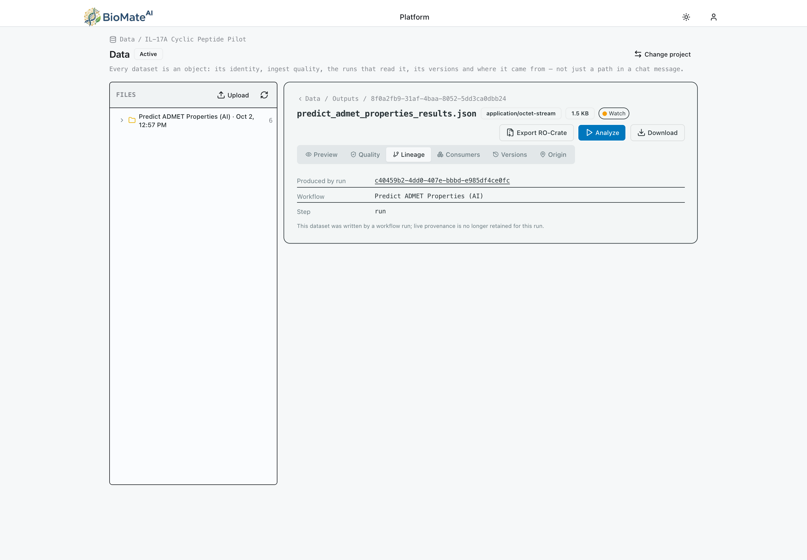

Start a program from a filtered, ranked shortlist — then triage, loop, and keep a defensible record.
Connected stages, each a hosted workflow you run without standing up or licensing in-house software: name a goal, design candidate molecules, predict their properties, rank the survivors, close the design–test loop behind a safety gate, project human exposure, and keep an audit-grade record — one pipeline, one provenance trail.
Demonstration compounds: three familiar drugs — aspirin, caffeine, ibuprofen — sent through the pipeline as an illustrative example. In-silico triage — not a drug-discovery campaign result, not a clinical claim. Each stage pairs an idea slide that teaches the concept with a product slide that shows it running on real output. Everything shown here runs, and every finding is read from that output — never invented.
One pass never produces a finished drug — the method is a cycle that compounds.
It is tempting to imagine a straight line: design once, test once, done. Real programs never work that way. Each round learns from the last and feeds the next — the Design–Build–Test–Learn loop. The payoff is that mistakes get cheaper and the shortlist gets better every turn.
Keep this loop in mind for the rest of the tutorial. The stages ahead are simply one trip around it — and the two features that make the loop trustworthy are the QC gate (Stage 5) and the reproducibility record (Stage 7).
Write down the target, the objectives, and the constraints — before any molecule exists.
Every later stage inherits these choices, so a vague goal produces a vague shortlist. You capture it simply by describing it in plain English to BioMate.
JAK1
A protein you want to act on — here, an inflammation-signalling example. A protein, not a molecule.
Bind · Absorb · Be safe
Bind the target; be orally absorbed; stay safe on the heart (hERG).
Novel · Makeable
Keep it novel; keep it synthesizable.
The objectives you name here become the columns you compare on in Stage 4 — and the hERG safety limit becomes the QC gate in Stage 5. This walkthrough demonstrates the mechanics on three familiar molecules — aspirin, caffeine, ibuprofen — rather than a full target campaign.
Which molecules should I even consider?
Rather than draw molecules by hand out of ~10⁶⁰ possibilities, BioMate proposes candidates by systematically enumerating chemically sensible variations around a seed you supply, then filters out known liabilities and ranks what survives into a shortlist. It runs end to end today, and returns a ranked starting set in minutes.
Enumerate around a seed
Systematically generate chemically sensible variations of a known starting molecule.
Screen liabilities
Drop known problem substructures and candidates outside your property window.
Ranked shortlist
Return a ranked list — each with a why-this-one note and its nearest known molecule.
A ranked shortlist in minutes — treat the output as well-formed ideas to filter and improve downstream, the beginning of the loop rather than the end of it.
ADMET asks: will the body even tolerate this molecule?
Binding is not enough — a molecule must be absorbed, go where it should, not be destroyed too fast, leave cleanly, and not poison anything. ADMET is those five questions. One endpoint, hERG, outranks the rest: block that cardiac potassium channel and you risk a fatal arrhythmia — it has killed approved drugs.
Absorption
Does it get in? (oral uptake)
Distribution
Where does it go?
Metabolism
How fast broken down?
Excretion
How does it leave?
Toxicity
Any harm? incl. hERG
A molecule can bind its target beautifully and still fail here — which is why ADMET comes early and cheap.
Everything you can change is shown before a single cent of compute is spent.
This is BioMate's ADMET prediction running live — a model trained on a large body of experimental measurements. Before it runs, the pre-run strip lays out your SMILES list — aspirin, caffeine, ibuprofen — and every model setting, editable.

It runs on hosted cloud compute, and the quality gates are visible the whole time.
Live phase progress streams in as each step completes on hosted cloud compute. The gates that will be checked — including hERG — are shown alongside, so you can scan the hERG column first and set aside any candidate above your safety limit.

When it finishes, the workflow panel tells the whole story.
The completed run shows a "COMPLETED" badge and a "Run again" action, with after-run tabs — Summary, Outputs, and the reproducibility record. The chat summary stays in sync with the panel: the same workflow name and the same state, with nothing stale or half-rendered.

Which handful is the best all-round compromise?
Each candidate now has several numbers that disagree — potent but insoluble, safe but hard to make. BioMate keeps every goal in its own column and units, never blended into one score that could hide an unsafe molecule, and shows the Pareto front: the trade-off boundary where you can't improve one goal without sacrificing another.
How the ranking works
The unblended, read-it-yourself ranking inside Design & Generate. Rejected molecules stay visible with their reason. You pick the trade-off; the product never silently collapses your goals into one number.
A quality gate turns a threshold into a decision you can trust mid-run.
Back on the loop: inside a single run, a QC gate compares a value to your limit and halts or flags — it never quietly lets a failed check through. A gate that silently passes is worse than no gate, because it looks like success. When a gate fails, the system suggests a parameter change to try next — logged as a clear before-and-after diff, an advisory suggestion you decide whether to act on, not an autonomous re-run.
The native output is a blocker-risk score, an estimate — not a measured IC50. Any IC50 the model prints for a low-risk compound sits at the estimator's ceiling (about 10 mM) — a model output, not evidence of safety. In the same run the liver-injury (DILI) endpoint came back high, above the limit, so the safety gate flags it for follow-up. Read the gate — don't trust a single number.
What dose would a human need?
A molecule that binds well and looks safe still has to reach the right concentration at a sensible dose. PK is what the body does to the drug over time; PBPK is a mechanistic, organ-by-organ model that projects human exposure scenarios — often from animal data — and a projected starting-dose scenario for evaluation. Read the absolute numbers as a projection to reason with, not a guaranteed safe dose.
A three-step chain
Allometric scaling (animal → human) → PBPK organ-by-organ model (with renal/hepatic impairment sub-model) → virtual patient cohort (Monte-Carlo variability). You read Cmax, AUC, and a projected starting-dose scenario for evaluation.
Projected exposure for evaluation — absolute accuracy is not independently validated. Bring your own in-vivo concentration data and the same chain fits it directly.
A result is only as good as your ability to prove how you got it.
Provenance is the chain from an output back to the exact inputs, parameters, and software that produced it. Without it, a number is an assertion; with it, a number is evidence — defensible for a manuscript, a patent, or an IND submission. Lineage is that chain made navigable in the UI.
The record is the product
Every run captures run id, parameters, software versions, SHA-256 checksums, and citations — one click to JSON. And if BioMate cannot read an output, it withholds the finding and says so rather than inventing a summary.
Every file lands under the step that produced it.
The Outputs tab groups results by step — the ADMET table, the quality metrics, the toxicity report — so you never hunt for a file or guess which stage it came from.

The full audit trail — downloadable as one JSON.
This is the provenance concept made concrete: run id, parameters, software versions, outputs, and citations, all in one record you can attach to a submission. Where a field is empty in this run, the record shows it rather than hiding it.

Each output traces back to what produced it.
The lineage view walks the chain backward: this output came from this workflow, with these parameters, on these inputs. It is the navigable form of the provenance graph from the concept slide.

Frame → design → predict → rank → loop → dose → record.
A complete in-silico triage loop: a seed becomes a ranked, safety-filtered shortlist; a safety gate fires on a real liability and proposes a fix; and every number traces back to the exact inputs and parameters that produced it. Each idea slide taught the concept, each product slide showed it running on real output. The defensible advantage is not any one model — it is the closed loop plus an audit-grade provenance record, run on hosted compute with no software to license.
- 1Frame the goal — target, objectives, constraints
- 2–3Design candidates, predict their properties
- 4–5Rank the survivors, close the loop behind a QC gate
- 6–7Project the dose, keep the provenance record
What the loop delivers
- A ranked, safety-filtered shortlist from a single seed — in minutes.
- A safety gate that fires on a real liability and proposes a fix.
- A projected human-exposure scenario to reason with.
- An audit-grade record behind every number, one click to JSON.
In-silico triage, not a drug. The value is starting smart and failing cheap — not skipping the lab.